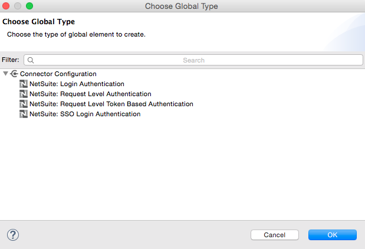
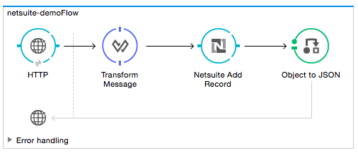
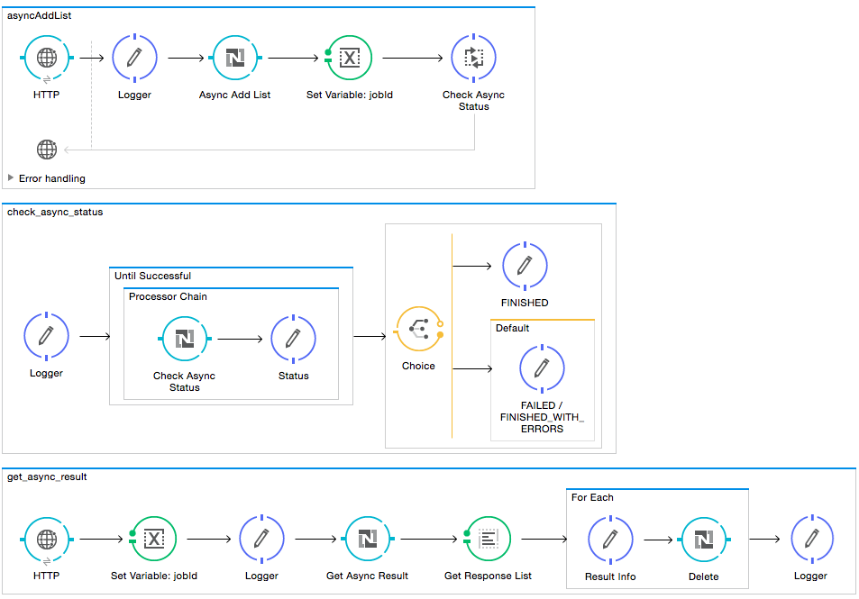
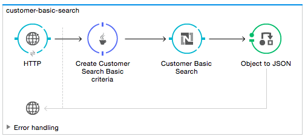
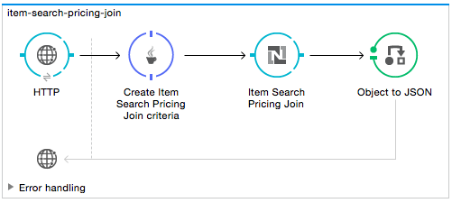
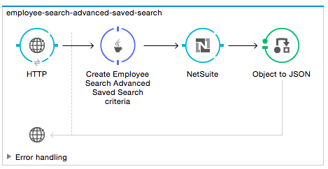
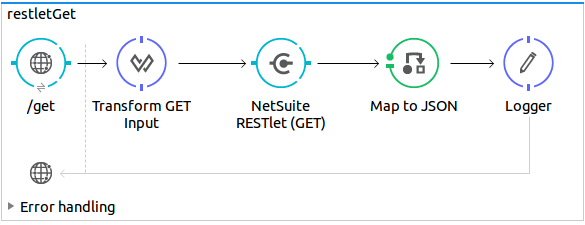

NetSuite Connector
Introduction
NetSuite is the world’s leading provider of cloud-based business management software. NetSuite helps companies manage core business processes with a single, fully integrated system covering ERP/financials, CRM, e-commerce, inventory, and more.
The NetSuite connector makes use of the SuiteTalk WSDL to provide SOAP-based integration and generate NetSuite business objects, make use of different authentication levels, and support error handling.
Read through this user guide to understand how to set up and configure a basic flow using the connector. Track feature additions, compatibility, limitations and API version updates with each release of the connector using the Connector Release Notes. Review the connector operations and functionality using the Technical Reference alongside the demo applications.
MuleSoft maintains this connector under the Select support policy.
Prerequisites
This document assumes that you are familiar with Mule, Anypoint Connectors, and the Anypoint Studio interface. To increase your familiarity with Studio, consider completing one or more Anypoint Studio Tutorials. Further, this page assumes that you have a basic understanding of Mule flows and Mule Global Elements.
To use this connector, you need:
-
A NetSuite account with Web Services Features enabled.
-
Anypoint Studio installed on your development machine.
Hardware and Software Requirements
For hardware and software requirements, please visit the Hardware and Software Requirements page.
Compatibility
For compatibility details for your version see the release notes
Install the Connector
You can install the connector in Anypoint Studio using the instructions in Installing a Connector from Anypoint Exchange.
Upgrade from an Older Version
If you’re currently using an older version of the connector, a small popup appears in the bottom right corner of Anypoint Studio with an "Updates Available" message.
-
Click the popup and check for available updates.
-
Click the Connector version checkbox and click Next and follow the instructions provided by the user interface.
-
Restart Studio when prompted.
-
After restarting, when creating a flow and using the Netsuite Connector, if you have several versions of the connector installed, you may be asked which version you would like to use. Choose the version you would like to use.
Additionally, we recommend that you keep Studio up to date with its latest version.
Configure the Connector Global Element
To use the NetSuite connector in your Mule application, you must configure a global NetSuite element that can be used by all the NetSuite connectors in the application (read more about global elements).
This release of the connector lets you pick from a list of four Global Elements, each representing a different way of authenticating to NetSuite:
| Configuration | Description |
|---|---|
Login Authentication |
Makes use of the SuiteTalk’s login API call on the first request sent by the connector to establish a session with NetSuite. |
Request Level Authentication |
Using this strategy, you can send user credentials in the SOAP header of each request instead of authenticating to NetSuite by invoking login. |
Single Sign-On Login Authentication |
This is a token based authentication system that avoids the use of environment username and password. Here you supply a privateKey together with other information. The connector is then responsible for generating an authentication token and establishing a session with NetSuite via the |
Request Level Token Based Authentication |
Similar to Single Sign-On Login Authentication, this is a token based authentication system. However, instead of using a privateKey generated via openssl, this uses a consumer and token key/secret pairs which are established within the NetSuite environment. |
Follow these steps to configure NetSuite connector global element in a Mule application:
-
Click the Global Elements tab at the base of the canvas.
-
On the Global Mule Configuration Elements screen, click Create.
-
In the "Choose Global Type" wizard, expand Connector Configuration, and then select NetSuite: Login Authentication, NetSuite: Request Level Authentication, NetSuite: SSO Login Authentication, or NetSuite: Request Level Token Based Authentication depending on your NetSuite authentication.

-
Click Ok.
-
Enter global element properties.
Login Authentication and Request Level Authentication
| Parameter | Description | ||
|---|---|---|---|
Name |
Enter a name for the configuration with which to reference it later. |
||
Enter the login email of the NetSuite UI. |
|||
Password |
Enter the corresponding password to log into NetSuite UI. |
||
Account |
Enter the account ID of the SuiteTalk NetSuite web services. This is usually found within NetSuite sandbox UI under Setup > Integration > Web Service Preferences. |
||
Role Id |
Enter the role ID for the user in SuiteTalk, which determines the Processor privileges. |
||
Application Id |
Enter the application ID corresponding to the Integration record to be used. |
||
Connection Timeout |
Enter the amount of time, in milliseconds, that the client must attempt to establish a connection before timing out. |
||
Receive Timeout |
Enter the amount of time, in milliseconds, that the client must wait for a response before timing out. |
||
Enable DataSense |
If you select this option, DataSense extracts metadata for NetSuite standard objects to automatically determine the data type and format that your application must deliver to, or can expect from, NetSuite. By enabling this functionality, Mule does the heavy lifting of discovering the type of data you must send to, or be prepared to receive from NetSuite. For more information, see DataSense. |
||
Endpoint |
Enter the URL of the service endpoint.
|
||
Separator |
Enter the separator used to support the keys that are required to provide a better support for custom fields. |
SSO Login Authentication
To use the SSO Login Authentication, enable this feature in your sandbox environment by NetSuite’s Support. NetSuite provides an SSO Kit and information on how to proceed with setting up private and public keys for use in generating authentication tokens. They also provide you with a Partner ID. After this setup is established, a mapping has to be created between the standard NetSuite credentials, the partner ID, company ID, and user ID. A developer or administrator should perform this mapping. It is not handled by the connector and it is only done once for each user ID that is allowed to authenticate using SSO within your company.
For this mapping, start by generating a token using the SSO Kit provided by NetSuite. To establish the mapping, invoke the SuiteTalks Web Service API call mapSso using an external Java application or any other method of your choice. A sample SOAP request of the mapSso API call looks as follows:
1
2
3
4
5
6
7
8
9
10
11
12
13
14
15
16
17
<soapenv:Envelope xmlns:soapenv="http://schemas.xmlsoap.org/soap/envelope/" xmlns:urn="urn:messages_2015_1.platform.webservices.netsuite.com" xmlns:urn1="urn:core_2015_1.platform.webservices.netsuite.com">
<soapenv:Header></soapenv:Header>
<soapenv:Body>
<urn:mapSso>
<urn:ssoCredentials>
<urn1:email>Your NetSuite email</urn1:email>
<urn1:password>Your NetSuite password</urn1:password>
<urn1:account>Your NetSuite account Id</urn1:account>
<urn1:role internalId="The account role Id"></urn1:role>
<urn1:authenticationToken>
The token string generated using the SSO kit
</urn1:authenticationToken>
<urn1:partnerId>Your NetSuite partner Id</urn1:partnerId>
</urn:ssoCredentials>
</urn:mapSso>
</soapenv:Body>
</soapenv:Envelope>
| Parameter | Description |
|---|---|
Name |
Enter a name for the configuration so it can be referenced later. |
Partner Id |
Enter the partner ID used in the mapping process. |
Partner Account |
Enter the account ID of the SuiteTalk NetSuite web services. |
Company ID |
Enter the company ID used in the mapping process for the connector to generate a token. |
User ID |
Enter the user ID used in the mapping process for the connector to generate a token. |
Key File |
Enter the privateKey file name to pick up from the project. This file should be the .der file generated as per NetSuite’s specifications. This is used to encrypt the company ID and user ID into a token for ssoLogin. |
Application Id |
Enter the application ID corresponding to the Integration record to be used. |
Connection Timeout |
Enter the amount of time, in milliseconds, that the client must attempt to establish a connection before timing out. |
Receive Timeout |
Enter the amount of time, in milliseconds, that the client must wait for a response before timing out. |
Enable DataSense |
If you select this option, DataSense extracts metadata for NetSuite standard objects to automatically determine the data type and format that your application must deliver to, or can expect from, NetSuite. By enabling this functionality, Mule does the heavy lifting of discovering the type of data you must send to, or be prepared to receive from NetSuite. For more information, see DataSense. |
Endpoint |
Enter the URL of the service endpoint. |
Separator |
Enter the separator used to support the keys that are required to provide a better support for custom fields. |
Required Libraries |
Click Add File to add the SSO jar that you acquire via NetSuite support. |
Request Level Token Based Authentication
To use this authentication mechanism you will need to set up an Integration Record within NetSuite and enable Token Based Authentication. This will automatically generate a consumer key and secret for you.
Furthermore you must set up an access token from within your NetSuite environment that combines the Integration Record with a User. This could be done assuming that your NetSuite account has the required permissions enabled in order to generate such tokens and login using them.
Please refer to NetSuite’s Help Center or SuiteAnswers for detailed information on how to navigate NetSuite and set this up.
| Parameter | Description | ||
|---|---|---|---|
Consumer Key |
Enter the consumer key value for the token based authentication enabled integration record being used. |
||
Consumer Secret |
Enter the consumer secret value for the token based authentication enabled integration record being used. |
||
Token Id |
Enter the token id representing the unique combination of a user and integration generated within the NetSuite environment. |
||
Token Secret |
Enter the respective token secret for the user/integration pair. |
||
Account |
Enter the account ID of the SuiteTalk NetSuite web services. This is usually found within NetSuite sandbox UI under Setup > Integration > Web Service Preferences. |
||
Connection Timeout |
Enter the amount of time, in milliseconds, that the client must attempt to establish a connection before timing out. |
||
Receive Timeout |
Enter the amount of time, in milliseconds, that the client must wait for a response before timing out. |
||
Enable DataSense |
If you select this option, DataSense extracts metadata for NetSuite standard objects to automatically determine the data type and format that your application must deliver to, or can expect from, NetSuite. By enabling this functionality, Mule does the heavy lifting of discovering the type of data you must send to, or be prepared to receive from NetSuite. For more information, see DataSense. |
||
Endpoint |
Enter the URL of the service endpoint.
|
||
Separator |
Enter the separator used to support the keys that are required to provide a better support for custom fields. |
Using the Connector
NetSuite connector is an operation-based connector, which means that when you add the connector to your flow, you need to configure a specific web service operation for the connector to perform. NetSuite connector v7.2.0 supports 50 operations.
Connector Namespace and Schema
When designing your application in Studio, the act of dragging the connector from the palette onto the Anypoint Studio canvas should automatically populate the XML code with the connector namespace and schema location.
-
Namespace:
http://www.mulesoft.org/schema/mule/netsuite -
Schema Location:
http://www.mulesoft.org/schema/mule/netsuite/current/mule-netsuite.xsd
If you are manually coding the Mule application in Studio’s XML editor or other text editor, define the namespace and schema location in the header of your Configuration XML, inside the <mule> tag. |
1
2
3
4
5
6
7
8
9
10
11
12
<mule xmlns="http://www.mulesoft.org/schema/mule/core"
xmlns:xsi="http://www.w3.org/2001/XMLSchema-instance"
xmlns:netsuite="http://www.mulesoft.org/schema/mule/netsuite"
xsi:schemaLocation="
http://www.mulesoft.org/schema/mule/core
http://www.mulesoft.org/schema/mule/core/current/mule.xsd
http://www.mulesoft.org/schema/mule/netsuite
http://www.mulesoft.org/schema/mule/netsuite/current/mule-netsuite.xsd">
<!-- put your global configuration elements and flows here -->
</mule>
Examples of NetSuite global configurations:
1
2
3
4
5
6
7
8
9
10
11
<!-- Login Authentication -->
<netsuite:config-login-authentication name="NetSuite" email="${email}" password="${password}" account="${account}" roleId="${roleId}" applicationId="${applicationId}"/>
<!-- Request Level Authentication -->
<netsuite:config-request-level-authentication name="NetSuite" email="${email}" password="${password}" account="${account}" roleId="${roleId}" applicationId="${applicationId}"/>
<!-- Request Level Token Based Authentication -->
<netsuite:config-request-level-token-based-authentication name="NetSuite" consumerKey="${consumerKey}" consumerSecret="${consumerSecret}" tokenId="${tokenId}" tokenSecret="${tokenSecret}" account="${account}" />
<!-- SSO Login Authentication -->
<netsuite:config-sso-login-authentication name="NetSuite" email="${email}" password="${password}" account="${account}" roleId="${roleId}" applicationId="${applicationId}"/>
Demo Mule Applications Using the Connector
You can download fully functional demo applications using the NetSuite connector from this link.
Example Use Case
The current use case describes how to create a Mule application to add a new Employee record in NetSuite using Login Authentication.

-
Create a new Mule Project in Anypoint Studio.
-
Set NetSuite credentials in
src/main/resources/mule-app.properties.1 2 3 4 5
netsuite.email= netsuite.password= netsuite.account= netsuite.roleId= netsuite.applicationId=
-
Create a new NetSuite: Login Authentication global element configuration and fill in the credentials using placholders:
<netsuite:config-login-authentication name="NetSuite" email="${netsuite.email}" password="${netsuite.password}" account="${netsuite.account}" roleId="${netsuite.roleId}" applicationId="${netsuite.applicationId}" doc:name="NetSuite: Login Authentication"/> -
Click Test Connection to confirm that Mule can connect with the NetSuite instance. If the connection is successful, click OK to save the configuration. Otherwise, review or correct any invalid parameters and test again.
-
Create a new HTTP Listener global element configuration and leave it with the default values.
-
Drag a HTTP endpoint onto the canvas and configure the following parameters:
Parameter Value Connector Configuration
HTTP_Listener_Configuration
Path
/addEmployee
-
Drag the NetSuite connector next to the HTTP and in the Connector Configuration field select the configuration created in the previous section.
-
Configure the processor with the following values:
Parameter Value Display Name
NetSuite (or any other name you prefer)
Config Reference
NetSuite (name of the global element you have created)
Operation
Add record
Record Type
EMPLOYEE
Attributes Reference
#[payload] -
Drag a Transform Message component before the NetSuite connector, then click the component to open its properties editor. Once metadata has been retrieved, select the respective fields to populate for the Employee. The DataWeave script should look similar to the following:
1 2 3 4 5 6 7 8 9 10 11 12
%dw 1.0 %output application/java --- { email: inboundProperties."http.query.params".email, externalId: inboundProperties."http.query.params".externalId, firstName: inboundProperties."http.query.params".name, lastName: inboundProperties."http.query.params".lastname, subsidiary: { internalId: 3 } } -
Add an Object to JSON transformer right after the NetSuite endpoint to capture the response.
-
Deploy the application (right-click > Run As > Mule Application).
-
From a web browser, enter the employee’s e-mail address, externalId, lastname, and name in the form of the following query parameters:
1
http://localhost:8081/addEmployee?email=<EMAIL_ADDRESS>&externalId=<ENTERNAL_ID>&lastname=<LAST_NAME>&name=<FIRST_NAME>
-
Mule conducts the query, and adds the Employee record to NetSuite.
Example Use Case - XML
Paste this into Anypoint Studio to interact with the example use case application discussed in this guide.
1
2
3
4
5
6
7
8
9
10
11
12
13
14
15
16
17
18
19
20
21
22
23
24
25
26
27
28
29
30
31
32
33
34
35
36
37
38
39
40
41
<?xml version="1.0" encoding="UTF-8"?>
<mule xmlns:tracking="http://www.mulesoft.org/schema/mule/ee/tracking" xmlns:dw="http://www.mulesoft.org/schema/mule/ee/dw" xmlns:netsuite="http://www.mulesoft.org/schema/mule/netsuite"
xmlns:json="http://www.mulesoft.org/schema/mule/json"
xmlns:http="http://www.mulesoft.org/schema/mule/http"
xmlns="http://www.mulesoft.org/schema/mule/core" xmlns:doc="http://www.mulesoft.org/schema/mule/documentation"
xmlns:spring="http://www.springframework.org/schema/beans"
xmlns:xsi="http://www.w3.org/2001/XMLSchema-instance"
xsi:schemaLocation="http://www.mulesoft.org/schema/mule/netsuite http://www.mulesoft.org/schema/mule/netsuite/current/mule-netsuite.xsd
http://www.mulesoft.org/schema/mule/json http://www.mulesoft.org/schema/mule/json/current/mule-json.xsd
http://www.mulesoft.org/schema/mule/http http://www.mulesoft.org/schema/mule/http/current/mule-http.xsd
http://www.springframework.org/schema/beans http://www.springframework.org/schema/beans/spring-beans-current.xsd
http://www.mulesoft.org/schema/mule/core http://www.mulesoft.org/schema/mule/core/current/mule.xsd
http://www.mulesoft.org/schema/mule/ee/dw http://www.mulesoft.org/schema/mule/ee/dw/current/dw.xsd
http://www.mulesoft.org/schema/mule/ee/tracking http://www.mulesoft.org/schema/mule/ee/tracking/current/mule-tracking-ee.xsd">
<netsuite:config-login-authentication name="NetSuite__Login_Authentication"
email="${netsuite.email}" password="${netsuite.password}"
account="${netsuite.account}" roleId="${netsuite.roleId}"
applicationId="${netsuite.applicationId}" doc:name="NetSuite: Login Authentication"/>
<http:listener-config name="HTTP_Listener_Configuration" host="localhost" port="8081" doc:name="HTTP Listener Configuration"/>
<flow name="netsuite-demoFlow" >
<http:listener config-ref="HTTP_Listener_Configuration" path="/addEmployee" doc:name="HTTP"/>
<dw:transform-message doc:name="Set Input Params">
<dw:input-payload />
<dw:set-payload><![CDATA[%dw 1.0
%output application/java
---
{
email: inboundProperties."http.query.params".email,
externalId: inboundProperties."http.query.params".externalId,
firstName: inboundProperties."http.query.params".name,
lastName: inboundProperties."http.query.params".lastname,
subsidiary: {
internalId: 3
}
}]]></dw:set-payload>
</dw:transform-message>
<netsuite:add-record config-ref="NetSuite" recordType="EMPLOYEE" doc:name="Add Employee Record"/>
<json:object-to-json-transformer doc:name="Object to JSON"/>
</flow>
</mule>
Additional XML Examples
Asynchronous Operations
This code example demonstrates how to use async-add-list together with the check-async-status, get-async-result, and delete operations, using a custom record type.
| For this example code to work, you must use a custom record type of your own (or just a regular type) |

1
2
3
4
5
6
7
8
9
10
11
12
13
14
15
16
17
18
19
20
21
22
23
24
25
26
27
28
29
30
31
32
33
34
35
36
37
38
39
40
41
42
43
44
45
46
47
48
49
50
51
52
53
54
55
56
57
58
59
60
61
62
63
64
65
66
67
68
69
70
71
72
73
74
75
76
77
78
79
80
81
82
83
84
85
86
87
88
89
90
91
92
93
94
95
96
97
98
99
100
101
102
103
104
105
106
107
108
109
<?xml version="1.0" encoding="UTF-8"?>
<mule xmlns:tracking="http://www.mulesoft.org/schema/mule/ee/tracking"
xmlns:dw="http://www.mulesoft.org/schema/mule/ee/dw" xmlns:netsuite="http://www.mulesoft.org/schema/mule/netsuite"
xmlns:json="http://www.mulesoft.org/schema/mule/json" xmlns:http="http://www.mulesoft.org/schema/mule/http"
xmlns="http://www.mulesoft.org/schema/mule/core" xmlns:doc="http://www.mulesoft.org/schema/mule/documentation"
xmlns:spring="http://www.springframework.org/schema/beans" xmlns:xsi="http://www.w3.org/2001/XMLSchema-instance"
xsi:schemaLocation="http://www.mulesoft.org/schema/mule/netsuite http://www.mulesoft.org/schema/mule/netsuite/current/mule-netsuite.xsd
http://www.mulesoft.org/schema/mule/json http://www.mulesoft.org/schema/mule/json/current/mule-json.xsd
http://www.mulesoft.org/schema/mule/http http://www.mulesoft.org/schema/mule/http/current/mule-http.xsd
http://www.springframework.org/schema/beans http://www.springframework.org/schema/beans/spring-beans-current.xsd
http://www.mulesoft.org/schema/mule/core http://www.mulesoft.org/schema/mule/core/current/mule.xsd
http://www.mulesoft.org/schema/mule/ee/tracking http://www.mulesoft.org/schema/mule/ee/tracking/current/mule-tracking-ee.xsd">
<!-- Configs -->
<netsuite:config-login-authentication name="NetSuite__Login_Authentication"
email="${netsuite.email}" password="${netsuite.password}"
account="${netsuite.account}" roleId="${netsuite.roleId}"
applicationId="${netsuite.applicationId}" doc:name="NetSuite: Login Authentication" />
<http:listener-config name="HTTP_Listener_Configuration"
host="0.0.0.0" port="8081" doc:name="HTTP Listener Configuration" />
<!-- Add List Flow -->
<flow name="asyncAddList">
<http:listener config-ref="HTTP_Listener_Configuration" path="/asyncAddList" doc:name="HTTP" />
<logger message="Process Started ..." level="INFO" doc:name="Logger" />
<netsuite:async-add-list config-ref="NetSuite__Login_Authentication"
recordType="__customRecordType__customrecordcustomaccount__22"
doc:name="Async Add List">
<netsuite:records-attributes>
<!-- Attribute 1 -->
<netsuite:records-attribute>
<netsuite:inner-records-attribute
key="externalId">addListExt1</netsuite:inner-records-attribute>
<netsuite:inner-records-attribute
key="name">addListName1</netsuite:inner-records-attribute>
</netsuite:records-attribute>
<!-- Attribute 2 -->
<netsuite:records-attribute>
<netsuite:inner-records-attribute
key="externalId">addListExt2</netsuite:inner-records-attribute>
<netsuite:inner-records-attribute
key="name">addListName2</netsuite:inner-records-attribute>
</netsuite:records-attribute>
</netsuite:records-attributes>
</netsuite:async-add-list>
<set-variable variableName="jobId" value="#[payload.getJobId()]"
doc:name="Set Variable: jobId" />
<!-- Call sub-flow 'Check Async' -->
<flow-ref name="check_async_status" doc:name="Check Async Status" />
</flow>
<!-- Check Async Sub-flow -->
<sub-flow name="check_async_status">
<logger message="===== Checking status for jobId: #[flowVars.jobId] =====" level="INFO" doc:name="Logger" />
<until-successful maxRetries="180"
failureExpression="#[payload.getStatus() == com.netsuite.webservices.platform.core.types.AsyncStatusType.PENDING
|| payload.getStatus() == com.netsuite.webservices.platform.core.types.AsyncStatusType.PROCESSING]"
synchronous="true" doc:name="Until Successful" millisBetweenRetries="10000">
<processor-chain doc:name="Processor Chain">
<netsuite:check-async-status config-ref="NetSuite__Login_Authentication" jobId="#[flowVars.jobId]" doc:name="Check Async Status" />
<logger message="Status is: #[payload.getStatus()]" level="INFO" doc:name="Status" />
</processor-chain>
</until-successful>
<choice doc:name="Choice">
<when expression="#[payload.getStatus() == com.netsuite.webservices.platform.core.types.AsyncStatusType.FINISHED]">
<logger message="Records have been added successfully." level="INFO" doc:name="FINISHED" />
</when>
<otherwise>
<logger message="An error has been encountered for jobId: #[flowVars.jobId] Navigate to Setup > Integration > Web Services Process Status on your sandbox for more information."
level="ERROR" doc:name="FAILED / FINISHED_WITH_ERRORS" />
</otherwise>
</choice>
</sub-flow>
<!-- Get Result Sub-flow -->
<sub-flow name="get_async_result" >
<http:listener config-ref="HTTP_Listener_Configuration"
path="/getAsyncResult" doc:name="HTTP" />
<set-variable variableName="jobId"
value="#[message.inboundProperties.'http.query.params'.jobId]"
doc:name="Set Variable: jobId" />
<logger message="===== Results for jobId: #[flowVars.jobId] ====="
level="INFO" doc:name="Logger" />
<netsuite:get-async-result config-ref="NetSuite__Login_Authentication"
jobId="#[flowVars.jobId]" doc:name="Get Async Result" />
<set-payload value="#[payload.getWriteResponseList().getWriteResponse()]"
doc:name="Get Response List" />
<foreach doc:name="For Each">
<logger message="Custom record with externalId:
#[payload.getBaseRef().getExternalId()] and typeId:
#[payload.getBaseRef().getTypeId()] ... Deleting it!"
level="INFO" doc:name="Result Info" />
<netsuite:delete config-ref="Netsuite" doc:name="Delete">
<netsuite:base-ref type="CUSTOM_RECORD_REF"
externalId="#[payload.getBaseRef().getExternalId()]">
<netsuite:specific-fields>
<netsuite:specific-field key="typeId">#[payload.getBaseRef().getTypeId()]</netsuite:specific-field>
</netsuite:specific-fields>
</netsuite:base-ref>
</netsuite:delete>
</foreach>
<logger message="Process Complete" level="INFO" doc:name="Logger" />
</sub-flow>
</mule>
Basic Search
For this example, we set up a basic search operation for Customers (CustomerSearchBasic) with the criteria below:
-
companyNamestarts with "A". -
The customer is not an individual.
-
The customer has a priority of 50, which is handled by a
customField.
Below is the Studio flow and the corresponding code:

1
2
3
4
5
6
7
8
9
10
11
12
13
14
15
16
17
18
19
20
21
22
23
24
25
<?xml version="1.0" encoding="UTF-8"?>
<mule xmlns:netsuite="http://www.mulesoft.org/schema/mule/netsuite"
xmlns:json="http://www.mulesoft.org/schema/mule/json"
xmlns:http="http://www.mulesoft.org/schema/mule/http"
xmlns="http://www.mulesoft.org/schema/mule/core" xmlns:doc="http://www.mulesoft.org/schema/mule/documentation"
xmlns:spring="http://www.springframework.org/schema/beans"
xmlns:xsi="http://www.w3.org/2001/XMLSchema-instance"
xsi:schemaLocation="
http://www.mulesoft.org/schema/mule/netsuite http://www.mulesoft.org/schema/mule/netsuite/current/mule-netsuite.xsd
http://www.mulesoft.org/schema/mule/json http://www.mulesoft.org/schema/mule/json/current/mule-json.xsd
http://www.mulesoft.org/schema/mule/http http://www.mulesoft.org/schema/mule/http/current/mule-http.xsd http://www.springframework.org/schema/beans http://www.springframework.org/schema/beans/spring-beans-current.xsd
http://www.mulesoft.org/schema/mule/core http://www.mulesoft.org/schema/mule/core/current/mule.xsd">
<http:listener-config name="HTTP_Listener_Configuration" host="0.0.0.0" port="8081" doc:name="HTTP Listener Configuration"/>
<netsuite:config-login-authentication name="NetSuite__Login_Authentication" email="${netsuite.email}" password="${netsuite.password}" account="${netsuite.account}" roleId="${netsuite.roleId}" applicationId="${netsuite.applicationId}" doc:name="NetSuite: Login Authentication"/>
<flow name="customer-basic-search">
<http:listener config-ref="HTTP_Listener_Configuration" path="/basicSearch" doc:name="HTTP"/>
<component class="CustomerBasicSearchComponent" doc:name="Create Customer Search Basic criteria"/>
<netsuite:search config-ref="NetSuite__Login_Authentication" searchRecord="CUSTOMER_BASIC" fetchSize="5" doc:name="Customer Basic Search"/>
<json:object-to-json-transformer doc:name="Object to JSON"/>
</flow>
</mule>
Java Component Code
1
2
3
4
5
6
7
8
9
10
11
12
13
14
15
16
17
18
19
20
21
22
23
24
25
26
27
28
29
public class CustomerBasicSearchComponent implements Callable {
@Override
public Object onCall(MuleEventContext eventContext) throws Exception {
CustomerSearchBasic searchCriteria = new CustomerSearchBasic();
SearchStringField companyNameFilter = new SearchStringField();
companyNameFilter.setOperator(SearchStringFieldOperator.STARTS_WITH);
companyNameFilter.setSearchValue("A");
searchCriteria.setCompanyName(companyNameFilter);
SearchBooleanField isPersonFilter = new SearchBooleanField();
isPersonFilter.setSearchValue(false);
searchCriteria.setIsPerson(isPersonFilter);
SearchCustomFieldList customFieldListFilter = new SearchCustomFieldList();
List<SearchCustomField> customFieldList = new ArrayList<SearchCustomField>();
SearchLongCustomField priority = new SearchLongCustomField();
priority.setScriptId("custentity_cust_priority");
priority.setOperator(SearchLongFieldOperator.EQUAL_TO);
priority.setSearchValue(50l);
customFieldList.add(priority);
customFieldListFilter.setCustomField(customFieldList);
searchCriteria.setCustomFieldList(customFieldListFilter);
return searchCriteria;
}
}
Joined Search
This example here searches for all inventory items with a pricing join (ItemSearch) where the price rate is of 10.00.
The search criteria is set within a custom Java component.

1
2
3
4
5
6
<flow name="item-search-pricing-join">
<http:listener config-ref="HTTP_Listener_Configuration" path="/joinedSearch" doc:name="HTTP"/>
<component class="ItemSearchPricingJoinComponent" doc:name="Create Item Search Pricing Join criteria"/>
<netsuite:search config-ref="NetSuite__Login_Authentication" searchRecord="ITEM" doc:name="Item Search Pricing Join"/>
<json:object-to-json-transformer doc:name="Object to JSON"/>
</flow>
Java Component Code
1
2
3
4
5
6
7
8
9
10
11
12
13
14
15
16
17
18
19
20
21
22
23
24
25
26
public class ItemSearchPricingJoinComponent implements Callable {
@Override
public Object onCall(MuleEventContext eventContext) throws Exception {
ItemSearch searchCriteria = new ItemSearch();
ItemSearchBasic basicCriteria = new ItemSearchBasic();
SearchEnumMultiSelectField typeFilter = new SearchEnumMultiSelectField();
List<String> typeList = new ArrayList<String>();
typeList.add("_inventoryItem");
typeFilter.setOperator(SearchEnumMultiSelectFieldOperator.ANY_OF);
typeFilter.setSearchValue(typeList);
basicCriteria.setType(typeFilter);
searchCriteria.setBasic(basicCriteria);
PricingSearchBasic pricingJoinCriteria = new PricingSearchBasic();
SearchDoubleField rateFilter = new SearchDoubleField();
rateFilter.setOperator(SearchDoubleFieldOperator.EQUAL_TO);
rateFilter.setSearchValue(10.00d);
pricingJoinCriteria.setRate(rateFilter);
searchCriteria.setPricingJoin(pricingJoinCriteria);
return searchCriteria;
}
}
Advanced Search
The example constructs a simple Java component that creates a criteria to get the result of an Employee saved search in our NetSuite environment (EmployeeSearchAdvanced). Each saved search in NetSuite has a particular id. Here, we use the scriptId customsearch130.

1
2
3
4
5
6
<flow name="employee-search-advanced-saved-search">
<http:listener config-ref="HTTP_Listener_Configuration" path="/advancedSearch" doc:name="HTTP"/>
<component class="EmployeeSearchAdvancedSavedComponent" doc:name="Create Employee Search Advanced Saved Search criteria"/>
<netsuite:search config-ref="NetSuite__Login_Authentication" searchRecord="EMPLOYEE_ADVANCED" doc:name="NetSuite"/>
<json:object-to-json-transformer doc:name="Object to JSON"/>
</flow>
Java Component Code
1
2
3
4
5
6
7
8
9
10
11
12
public class EmployeeSearchAdvancedSavedComponent implements Callable {
@Override
public Object onCall(MuleEventContext eventContext) throws Exception {
EmployeeSearchAdvanced searchCriteria = new EmployeeSearchAdvanced();
searchCriteria.setSavedSearchScriptId("customsearch130");
return searchCriteria;
}
}
RESTlet Calls
NetSuite RESTlets allow you to develop custom RESTful web services for your NetSuite account using JavaScript and SuiteScript. The example calls a script deployed as a RESTlet via the GET method. Here, we are attempting to get the CUSTOMER record with id = 700 using the RESTlet with script = 546 and deploy = 1.

1
2
3
4
5
6
7
8
9
10
11
12
13
14
15
<flow name="restletGet">
<http:listener config-ref="HTTP_Listener_Configuration" path="/get" doc:name="/get"/>
<dw:transform-message doc:name="Transform GET Input">
<dw:set-payload><![CDATA[%dw 1.0
%output application/java
---
{
"id": "700",
"recordtype": "customer"
}]]></dw:set-payload>
</dw:transform-message>
<netsuite:call-restlet-get config-ref="NetSuite__Request_Level_Authentication" deploy="1" script="546" doc:name="NetSuite RESTlet (GET)"/>
<json:object-to-json-transformer doc:name="Map to JSON"/>
<logger level="INFO" doc:name="Logger"/>
</flow>
Connector Performance
Best Practices
DataWeave
The NetSuite connector’s DataSense capability coupled with that of DataWeave via the Transform Message component makes integrating with your NetSuite environment straightforward. For the following two examples, we use a JSON input string and extract the necessary data from it to form our NetSuite request.
This example code adds a Journal Entry to NetSuite from the following JSON input:
1
2
3
4
5
6
7
8
9
10
11
12
13
14
15
16
17
18
19
20
21
22
23
24
25
26
27
28
29
30
31
32
33
34
35
36
37
38
39
40
41
42
43
44
45
46
47
48
49
50
51
52
53
{
"tranId":"SampleJournal123",
"subsidiary":{
"internalId":"1"
},
"customFieldList":{
"customField":[
{
"StringCustomFieldRef__custbodytestbodyfield":"Sample Transaction Body Custom Field"
}
]
},
"lineList":{
"line":[
{
"account":{
"internalId":"1"
},
"debit":100.0,
"customFieldList":{
"customField":[
{
"SelectCustomFieldRef__custcol_far_trn_relatedasset":{
"internalId":"1"
}
},
{
"StringCustomFieldRef__custcoltestcolumnfield": "Sample Transaction Column Custom Field 1"
}
]
}
},
{
"account":{
"internalId":"1"
},
"credit":100.0,
"customFieldList":{
"customField":[
{
"SelectCustomFieldRef__custcol_far_trn_relatedasset":{
"internalId":"2"
}
},
{
"StringCustomFieldRef__custcoltestcolumnfield": "Sample Transaction Column Custom Field 2"
}
]
}
}
]
}
}
The "add operation for the connector expects a Map as input. Here is the DataWeave script to paste into the Transform Message DataWeave editor:
1
2
3
4
5
6
7
8
9
10
%dw 1.0
%output application/java
---
{
customFieldList: payload.customFieldList,
lineList: payload.lineList,
subsidiary: payload.subsidiary,
tranId: payload.tranId
}
In this example, we use the same scenario for basic search as described in the previous section. However, instead of constructing the criteria in a java component, we transform a JSON string:
1
2
3
4
5
6
7
8
9
10
11
{
"companyName": {
"operator": "STARTS_WITH",
"searchValue": "A"
},
"isPerson": false,
"priority": {
"operator": "EQUAL_TO",
"searchValue": 50
}
}
Here is the DataWeave script to paste into the Transform Message DataWeave editor:
1
2
3
4
5
6
7
8
9
10
11
12
13
14
15
16
17
18
19
20
21
22
23
24
25
26
27
28
29
%dw 1.0
%output application/java
---
{
customFieldList: {
customField: [{
scriptId: "custentity_cust_priority",
operator: payload.priority.operator,
searchValue: payload.priority.searchValue
} as :object {
class : "com.netsuite.webservices.platform.core.SearchLongCustomField"
}]
} as :object {
class : "com.netsuite.webservices.platform.core.SearchCustomFieldList"
},
companyName: {
operator: payload.companyName.operator,
searchValue: payload.companyName.searchValue
} as :object {
class : "com.netsuite.webservices.platform.core.SearchStringField"
},
isPerson: {
searchValue: payload.isPerson
} as :object {
class : "com.netsuite.webservices.platform.core.SearchBooleanField"
}
} as :object {
class : "com.netsuite.webservices.platform.common.CustomerSearchBasic"
}
Tips
Search Operation
In NetSuite, the search operation can be used to execute a Basic Search, Joined Search or an Advanced Search. To this end, you need to instantiate one of these three search types for the record type you want to query:
<Record>SearchBasic |
Used to execute a search on a record type based on search filter fields that are specific to that type. |
|---|---|
|
Used to execute a search on a record type based on search filter fields specific to that type and others that are associated with a related record type. |
|
Used to execute a search on a record type in which you specify search filter fields and/or search return columns or joined search columns. Using advanced search, you can also return an existing saved search. |
This also applies for the asynchronous equivalent of search, the asyncSearch operation.
Search Pagination Support
Support for pagination was added to search for NetSuite connector version 7.0.0.
The connector’s search capability is now unified under one operation. Other search-related processors have been removed. Thus, search will always retrieve the whole set of results. Therefore users will not need to work with searchNext or searchMore in order to get the rest of the records from subsequent pages. The return type is also different; the processor will output a List of Maps representing each and every record obtained by your search criteria.
An important aspect to note is that pagination could not be applied to the asynchronous equivalent of search (asyncSearch). This is due to the fact that the actual pagination would have to be applied to the getAsyncResult operation. This would mean that only the first page would end up being retrieved asynchronously. Furthermore, getAsyncResult is common to all async operations. Hence we cannot even apply pagination here since the return type of this operation depends on what async operation was invoked.
Regarding the new search configuration, the connector is the same apart from a new attribute called fetchSize:
1
2
3
4
<netsuite:paged-search config-ref="NetSuite__Login_Authentication"
searchRecord="CUSTOMER_BASIC"
fetchSize="5"
doc:name="Customer Basic Search"/>
ItemSearchAdvanced and ReturnSearchColumns
When using search the connector will output a list of maps representing the Record objects returned by your search operation. If using an advanced search and the returnSearchColumns flag is set to true, NetSuite will return a SearchRowList containing the search results. The connector would then be responsible for mapping SearchRows into the corresponding Record type object in order to facilitate usability.
However, in the case of ItemSearchAdvanced the connector will not do this mapping and will simply provide the user with the SearchRows. This is the case due to the fact that ITEMs in NetSuite can be of various types and we cannot assume the item type from an ItemSearchRow. This issue would also occur with any other record type that behaves similar to ITEM, but we are currently not aware of others.
Custom Field DataSense
In NetSuite one can add different types of custom fields and have these customizations apply to different record types. With DataSense enabled, the NetSuite connector retrieves and shows these fields. Note however that we do not fully support all the customization types that NetSuite users are able to define. The following lists outline what fields we do and do not handle, and where they currently appear in relation to the record type’s attributes. For the most part you can see that customizations are usually present within a list field called customFieldList, but in some cases these might reside elsewhere.
Entity Fields
| Record Type | Custom Field Placement |
|---|---|
CONTACT |
Contact > customFieldList > customField |
CUSTOMER |
Customer > customFieldList > customField |
EMPLOYEE |
Employee > customFieldList > customField |
ENTITY_GROUP |
EntityGroup > customFieldList > customField |
PARTNER |
Partner > customFieldList > customField |
PROJECT_TASK |
ProjectTask > customFieldList > customField |
VENDOR |
Vendor > customFieldList > customField |
Item Fields
| Record Type | Custom Field Placement |
|---|---|
ASSEMBLY_ITEM |
AssemblyItem > customFieldList > customField |
ENTITY_GROUP |
EntityGroup > customFieldList > customField |
INVENTORY_ITEM |
InventoryItem > customFieldList > customField |
KIT_ITEM |
KitItem > customFieldList > customField |
NON_INVENTORY_PURCHASE_ITEM |
NonInventoryPurchaseItem > customFieldList > customField |
NON_INVENTORY_RESALE_ITEM |
NonInventoryResaleItem > customFieldList > customField |
NON_INVENTORY_SALE_ITEM |
NonInventorySaleItem > customFieldList > customField |
OTHER_CHARGE_PURCHASE_ITEM |
OtherChargePurchaseItem > customFieldList > customField |
OTHER_CHARGE_RESALE_ITEM |
OtherChargeResaleItem > customFieldList > customField |
OTHER_CHARGE_SALE_ITEM |
OtherChargeSaleItem > customFieldList > customField |
SERVICE_PURCHASE_ITEM |
ServicePurchaseItem > customFieldList > customField |
SERVICE_RESALE_ITEM |
ServiceResaleItem > customFieldList > customField |
SERVICE_SALE_ITEM |
ServiceSaleItem > customFieldList > customField |
CRM Fields
| Record Type | Custom Field Placement |
|---|---|
CALENDAR_EVENT |
CalendarEvent > customFieldList > customField |
CAMPAIGN |
Campaign > customFieldList > customField |
ISSUE |
Issue > customFieldList > customField |
MANUFACTURING_OPERATION_TASK |
ManufacturingOperationTask > customFieldList > customField |
PHONE_CALL |
PhoneCall > customFieldList > customField |
PROJECT_TASK |
ProjectTask > customFieldList > customField |
SOLUTION |
Solution > customFieldList > customField |
SUPPORT_CASE |
SupportCase > customFieldList > customField |
TASK |
Task > customFieldList > customField |
Transaction Body Fields
| Record Type | Custom Field Placement |
|---|---|
ASSEMBLY_BUILD |
AssemblyBuild > customFieldList > customField |
CASH_SALE |
CashSale > customFieldList > customField |
CUSTOMER_PAYMENT |
CustomerPayment > customFieldList > customField |
DEPOSIT |
Deposit > customFieldList > customField |
ESTIMATE |
Estimate > customFieldList > customField |
EXPENSE_REPORT |
ExpenseReport > customFieldList > customField |
INVENTORY_ADJUSTMENT |
InventoryAdjustment > customFieldList > customField |
INVOICE |
Invoice > customFieldList > customField |
ITEM_FULFILLMENT |
ItemFulfillment > customFieldList > customField |
ITEM_RECEIPT |
ItemReceipt > customFieldList > customField |
JOURNAL_ENTRY |
JournalEntry > customFieldList > customField |
OPPORTUNITY |
Opportunity > customFieldList > customField |
PURCHASE_ORDER |
PurchaseOrder > customFieldList > customField |
PURCHASE_REQUISITION |
PurchaseRequisition > customFieldList > customField |
SALES_ORDER |
SalesOrder > customFieldList > customField |
TRANSFER_ORDER |
TransferOrder > customFieldList > customField |
VENDOR_BILL |
VendorBill > customFieldList > customField |
VENDOR_CREDIT |
VendorCredit > customFieldList > customField |
VENDOR_PAYMENT |
VendorPayment > customFieldList > customField |
VENDOR_RETURN_AUTHORIZATION |
VendorReturnAuthorization > customFieldList > customField |
WORK_ORDER |
WorkOrder > customFieldList > customField |
Transaction Column Fields
| Record Type | Custom Field Placement |
|---|---|
CASH_SALE |
CashSale > itemList > item > customFieldList > customField |
ESTIMATE |
Estimate > itemList > item > customFieldList > customField |
EXPENSE_REPORT |
ExpenseReport > expenseList > expense > customFieldList > customField |
INVOICE |
Invoice > itemList > item > customFieldList > customField |
ITEM_FULFILLMENT |
ItemFulfillment > itemList > item > customFieldList > customField |
ITEM_RECEIPT |
ItemReceipt > itemList > item > customFieldList > customField |
JOURNAL_ENTRY |
JournalEntry > lineList > line > customFieldList > customField |
OPPORTUNITY |
Opportunity > itemList > item > customFieldList > customField |
PURCHASE_ORDER |
PurchaseOrder > itemList > item > customFieldList > customField |
PURCHASE_REQUISITION |
PurchaseRequisition > itemList > item > customFieldList > customField |
SALES_ORDER |
SalesOrder > itemList > item > customFieldList > customField |
TIME_BILL |
TimeBill > customFieldList > customField |
TRANSFER_ORDER |
TransferOrder > itemList > item > customFieldList > customField |
VENDOR_BILL |
VendorBill > itemList > item > customFieldList > customField |
VENDOR_CREDIT |
VendorCredit > itemList > item > customFieldList > customField |
VENDOR_PAYMENT |
VendorPayment > itemList > item > customFieldList > customField |
VENDOR_RETURN_AUTHORIZATION |
VendorReturnAuthorization > itemList > item > customFieldList > customField |
WORK_ORDER |
WorkOrder > itemList > item > customFieldList > customField |
Other Custom Fields
| Record Type | Custom Field Placement |
|---|---|
ACCOUNT |
Account > customFieldList > customField |
BIN |
Bin > customFieldList > customField |
CLASSIFICATION |
Classification > customFieldList > customField |
EXPENSE_CATEGORY |
ExpenseCategory > customFieldList > customField |
ITEM_DEMAND_PLAN |
ItemDemandPlan > customFieldList > customField |
ITEM_SUPPLY_PLAN |
ItemSupplyPlan > customFieldList > customField |
LOCATION |
Location > customFieldList > customField |
MANUFACTURING_COST_TEMPLATE |
ManufacturingCostTemplate > customFieldList > customField |
MANUFACTURING_ROUTING |
ManufacturingRouting > customFieldList > customField |
NOTE |
Note > customFieldList > customField |
PROMOTION_CODE |
PromotionCode > customFieldList > customField |
SUBSIDIARY |
Subsidiary > customFieldList > customField |
Resources
-
Learn more about working with Anypoint Connectors.
-
Access the NetSuite connector.